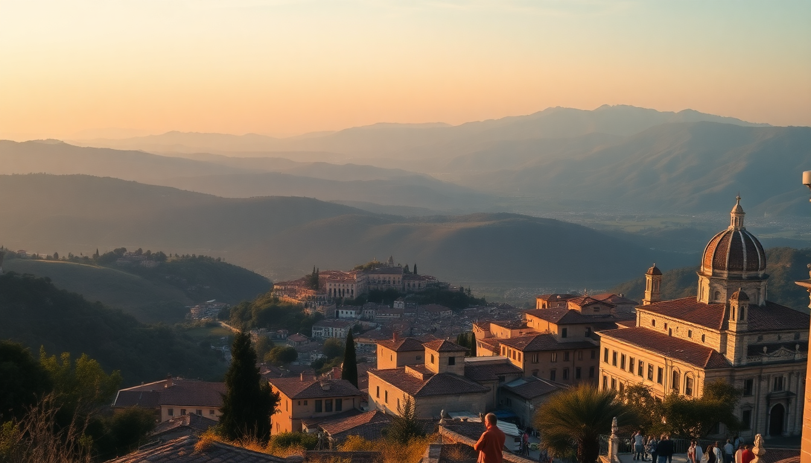

Best Day Trips from Rome: Tivoli, Ostia Antica & Pompeii

I’ve done all three of these day trips from Rome multiple times, and each one feels like a different era of Italian history. Tivoli gives you Renaissance gardens and fountains. Ostia Antica is a quieter, more walkable Pompeii without the crowds. Pompeii itself is the blockbuster—vast, haunting, and worth the early train. Here’s what actually works, what doesn’t, and where to eat between ruins.
Why is Tivoli worth the trip from Rome?
Tivoli is a 45-minute train ride from Roma Termini, and you get two UNESCO villas for the price of one day. Villa d’Este is the main draw—a 16th-century cardinal’s mansion with hundreds of fountains, from the roaring Fountain of Neptune to the subtle Owl Fountain. I walked the terraces for two hours and still missed half the water features. Villa Adriana (Hadrian’s Villa) is a 15-minute bus ride from Tivoli town center, and it’s a sprawling archaeological park built by Emperor Hadrian. Bring water and good shoes—both sites involve serious walking on uneven stone.
- Train: Take the regional train from Roma Termini to Tivoli (Trenitalia, about €3 one-way). Trains run hourly.
- Lunch stop: Trattoria del Falcone in Tivoli’s historic center—solid pasta alla carbonara and a quiet piazza to rest.
- Time needed: 5–6 hours total if you do both villas. Start at Villa d’Este first, then bus to Villa Adriana.
- Skip if: You hate crowds at fountains (Villa d’Este gets packed by 11 AM). Go on a weekday.
Is Ostia Antica a good alternative to Pompeii?
Yes, and I’ll go further: if you only have one day, Ostia Antica is often the smarter choice. It’s 30 minutes from Rome by train (Roma-Lido line from Piramide station), costs €18 entry, and you can walk through an entire Roman port city—bathhouses, apartment blocks, a theater—with maybe a tenth of Pompeii’s tourist traffic. I spent four hours there in June and had entire streets to myself. The mosaics in the Baths of Neptune are still vibrantly colored, and the ancient snack bar (thermopolium) still has its counter frescoes intact.
- Getting there: Take the Roma-Lido train from Piramide station (Metro B, Piramide stop). Trains every 15 minutes. Get off at Ostia Antica station.
- Best time: Arrive at opening (8:30 AM) to beat school groups. By noon, it’s busy but still manageable.
- Where to eat after: Ristorante Monumento just outside the entrance gate—simple grilled fish and cold white wine. Skip the overpriced cafeteria inside the park.
- Pompeii comparison: Pompeii is bigger and more dramatic (bodies, brothels, Vesuvius backdrop). Ostia is more intimate and less exhausting. Pick based on your stamina.
How do I actually get to Pompeii from Rome in one day?
It’s doable but requires planning. The fastest way is a high-speed train from Roma Termini to Napoli Centrale (Trenitalia Frecciarossa, 70 minutes, about €45 one-way if booked ahead), then switch to the Circumvesuviana commuter train from Napoli Garibaldi to Pompei Scavi station (40 minutes, €3). Total door-to-door time: about 2.5 hours each way. I’ve also done the direct “Pompei Express” bus from Rome (departs from Tiburtina station, 3 hours, €25 round-trip), which is slower but eliminates the Naples transfer. The bus drops you at the Porta Marina entrance, which is right next to the main ruins.
- Train option: Book Frecciarossa tickets on Trenitalia’s app at least a week in advance for the best prices. Avoid the cheaper Italo trains for this route—they stop at Roma Tiburtina, not Termini, which adds a metro transfer.
- Bus option: Pompei Express runs twice daily from Rome Tiburtina. Comfortable, air-conditioned, and they show a documentary about Vesuvius during the ride. Not thrilling, but practical.
- Inside the ruins: Start at the Forum, then hit the Lupanar (brothel), the House of the Vettii, and the Garden of the Fugitives (where the plaster casts of bodies are). Skip the amphitheater if you’re short on time—it’s mostly empty gravel.
- Lunch: Forget eating inside the ruins. Walk out the Porta Marina exit to Pizzeria da Franco for a margherita that costs €4 and tastes better than anything in the park.
What should I pack for these day trips from Rome?
Every trip involves long walks on uneven terrain, and the Italian sun is aggressive. I learned the hard way on my first Pompeii trip—I wore sandals and ended up buying cheap sneakers from a souvenir stand. Here’s what I actually used:
- Shoes: Closed-toe walking shoes with grip. Cobblestones, gravel, and slippery marble are everywhere in Tivoli and Ostia.
- Water: Reusable bottle. Both Tivoli’s villas and Pompeii have free drinking fountains (fontanelle) with cold, safe water. Ostia Antica has fewer, so bring a full bottle.
- Sunscreen and hat: There is almost no shade in Pompeii. Tivoli’s Villa d’Este has garden cover, but Villa Adriana is open fields.
- eSIM or data plan: I use Airalo for Italy—€10 for 5 GB. Google Maps is essential for train schedules and finding the right platform at Napoli Garibaldi.
- Small backpack: Leave the daypack at the hotel if it’s bulky. The ruins don’t have lockers, and carrying a giant bag in 35°C heat is miserable.
Which trip is best for families with kids?
Ostia Antica, without hesitation. It’s flat, compact, and has a small museum with touchable artifacts. My friend brought her 8-year-old, and he loved running through the ancient streets and pretending the theater was a gladiator arena. Pompeii is too big for young legs—I’ve seen kids melt down by the Forum because they’re already tired. Tivoli is a mixed bag: Villa d’Este’s fountains are kid-magnets, but Villa Adriana’s ruins are spread out and less engaging.
- Ostia Antica: Stroller-friendly main paths. The museum has a video that explains the city’s history in 10 minutes. Good for ages 5 and up.
- Tivoli: The fountains at Villa d’Este are magical for kids, but there are no railings around some pools. Keep toddlers close.
- Pompeii: Wait until they’re teenagers. The plaster casts of bodies can be intense for younger kids, and the heat is brutal.
FAQ
Is it better to book a guided tour or go DIY for these day trips? For Pompeii, book a guided tour through GetYourGuide or a similar platform—the site is 170 acres, and a guide saves you from wandering aimlessly. I did a 2-hour small-group tour and learned more about daily Roman life than I would in a week alone. For Ostia Antica and Tivoli, DIY is fine. Download the free audio guides from the official websites, or just wander—both sites are well-signed. The only exception is Villa d’Este: a guide helps explain the symbolism of the fountains, but the gardens are beautiful on their own.
Can I combine two day trips in one day? Not comfortably. I tried Pompeii and Naples in one day and regretted it—I was exhausted and saw neither well. Tivoli and Ostia Antica are both close to Rome, but they’re in opposite directions (Tivoli east, Ostia west). Pick one per day. If you’re desperate, do Ostia in the morning (opens at 8:30, done by 1 PM) and then head to Trastevere for lunch. That’s the only realistic double.
What’s the best time of year for these trips? April-May and September-October. Summer (June-August) is punishing—Pompeii hits 40°C in July, and the fountains at Tivoli don’t cool you down much. Winter (November-February) is quiet but cold, and some fountains at Villa d’Este are turned off. I did Ostia Antica in early March and had the place almost to myself. Train schedules don’t change much seasonally, so that’s not a factor.
Conclusion
- Tivoli is for garden lovers and anyone who wants two UNESCO sites in a half-day. Start at Villa d’Este, bus to Villa Adriana, eat at Trattoria del Falcone.
- Ostia Antica is the underrated gem—closer to Rome, cheaper, and far less crowded than Pompeii. Best for families and history buffs on a time budget.
- Pompeii is the epic day trip, but it demands a full day and serious planning. Book trains early, skip the on-site food, and wear real shoes.
- Pack water, sunscreen, and an eSIM. Every site has uneven ground and limited shade. A small backpack beats a shoulder bag.
- Don’t try to do two in one day. You’ll just end up grumpy and sunburned. Pick one, go deep, and save the others for your next trip.